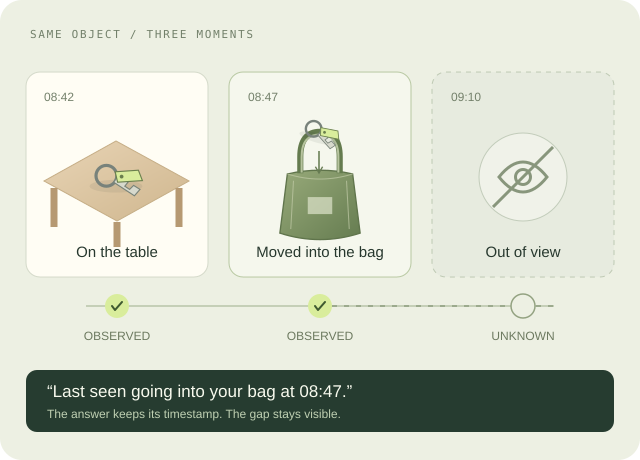
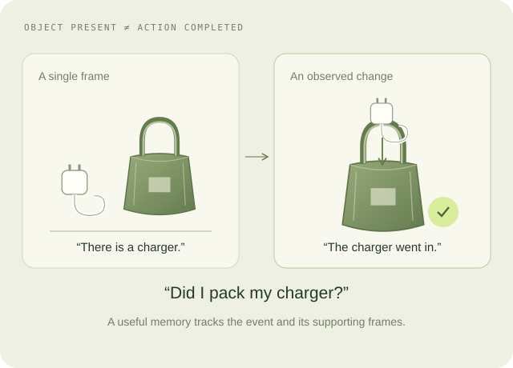
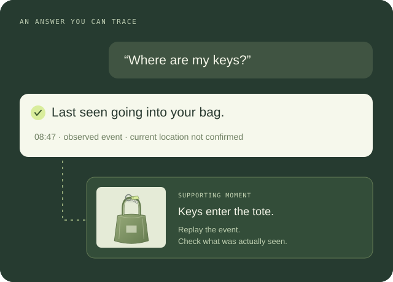

Keep the signals aligned.
Synchronize video and gaze, check calibration, and record missing observations. Build participant review and removal of sensitive segments into collection.
RESEARCH 001 / EVERYDAY MEMORY
What should an AI preserve from daily experience so it can help later? We want to connect naturalistic first-person footage, eye tracking, and genuine memory questions—with evidence for the answers and clear limits on what was observed.
Someone reads a parcel label and puts it away. The next day they ask whether the delivery arrived. Video records the event; gaze estimates where they looked; the later question reveals a use for that moment. Looking does not prove understanding or recall.
Does gaze help select memories that answer later questions, beyond what the video already provides?

The keys were on the table. Then they went into the bag. After recording stops, we no longer know whether they stayed there.
Can a model track an object through changes and missing observations without presenting an old location as a current fact?

“Did I pack the charger?” is a question about an event. A picture of a charger next to a bag does not answer it.
Can memories of state changes answer completed-action questions better than retrieving a similar-looking frame?

The answer links back to supporting evidence. If headphones never appeared in the recording, their location stays unknown.
Does an evidence-linked memory reduce unsupported answers while still answering the questions it can? We would measure accuracy and abstention together.

A PROPOSED PILOT / REPEATED DAYS, REAL NEEDS
Start with selected recording periods across two weeks for 5–10 consenting participants. Include ordinary cooking, packing, and putting things away. Use a controlled interrupted-packing task to establish a checked baseline first.
Synchronize video and gaze, check calibration, and record missing observations. Build participant review and removal of sensitive segments into collection.
Log spontaneous questions before reviewing footage. Keep prompted questions and retrospective reports separately labeled. Verify answers against evidence.
Compare the base model, video fine-tuning, and video-plus-gaze fine-tuning. Hold out participants and homes; measure accuracy, evidence, and unsupported claims.
THE MODEL / LEARNING WHAT TO KEEP
Fine-tune a vision-language model to recognize events, choose useful moments, and answer with evidence. Keep each person’s experiences in a searchable store so new memories do not require daily retraining.
WHAT THIS COULD LEAVE BEHIND
First-person observations paired with genuine recall questions, checked event histories, evidence timestamps, and labels for what cannot be known. A useful foundation for memory models and independent evaluations.
Inspect a sample data record →Scripted prototype · no camera access or model API